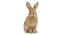
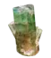
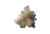
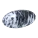
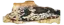
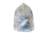

Symbol Grimoire
White

RabbitsRaccoons
Elbaite
Isis Calcite
Merlinite
Peanut Wood
Starseed QuartzSteatiteWhite stones are receptive and ruled by the Cancer. As such they are intimately linked with sleep and psychism.
In the past, white stones, especially chalcedony, were worn to promote lactation by mothers having trouble feeding their babies. In contemporary America, these are considered to be lucky stones, often carried in the pocket or worn to promote good fortune.
Because the Moon glows at night, Her stones are used for protection after dark, often when walking alone in hazardous places. Sometimes white and red stones are carried or worn together for protection at all hours.
To be rid of a headache, carry a white stone in your pocket.
Some workers say that white stones, because they contain all colors, can be magickally charged to act as substitutes for stones of any color. This is done through visualization.
Qualities of White
White is the color of purity, innocence, and protection. It provides sensations of freedom and unlimited opportunities. White eliminates negativity and encourages forgiveness and acceptance. This is where the term "the white dove of peace" comes from.
Religious Art
White is the emblem of purity, innocence, virginity, integrity, humility, and life. In religious art, God the Father wore white robes, as did Jesus after his resurrection. The Virgin Mary wears white in pictures of the Assumption (when she was transported to heaven). Psalm 51:7 has the following line: "Wash me, and I shall be whiter than snow."
White and red roses in religious art are a sign of innocence and spiritual love.
Symbolic Pairing: White and black together symbolizes purity. This is why the Carmelites and Dominicans wear these colors.
Religious Significance
Priests frequently wear white robes, as the color signifies spirit and light. Freshly baptized Christians also wear white clothes to signify their purity after being born again. This association also carries through to the tradition of brides being married in white. At the Transfiguration, Christ's robes were "exceeding white as snow" (Mark 9:3). White also signifies forgiveness. In Isaiah 1:18, the Lord says: "Though your sins be as scarlet, they shall be as white as snow."
White Magick and White Lies
"White magick" is magick that is performed with a positive goal in mind. It harms no one, but helps all. A "white lie" is an untruth that is either harmless or is said to avoid hurting someone's feelings.
Expressions and Symbolism
A "white elephant" is an object that costs much more than it's worth and is difficult to dispose of. This term is credited to one of the kings of Siam, who gave a white elephant to any courtier he wished to ruin financially.
In the seventeenth century the Bourbons used a white flag to symbolize a legitimate cause. However, the meaning of a white flag gradually changed and it became a sign of surrender. This comes from the white feather that symbolizes a coward or poor fighter.
A "whited sepulchre" is a hypocrite. (Matthew 23:27) To "whitewash" something is to cover it up to make everything appear above board.
The White House
The most famous white building in the world is the White House in Washington, D.C. In 1800, the decision was made that the building had to be white, the same color as the ancient Greek buildings. Half a century later, scholars found that the ancient Greek buildings were not white at all, but had been painted in a large variety of colors.
Norse Runic Symbolism
In the Norse runic tradition, white is the total expression of light as the sum of all colors. It represents totality, purity, perfection, and nobility, and is associated with the disk of the sun.
Personality of White
People drawn to white are gentle, quiet, and nurturing. They flourish with encouragement. They value solitude and may need to consciously seek more social interaction. They prefer intimate gatherings with close friends over loud, crowded parties. White is an uncommon favorite color choice and typically indicates someone navigating a transitional phase of life.
Aversion to White
Disliking white reveals feeling like an outsider. You never feel completely comfortable in any situation. Loneliness pervades your experience as making friends proves difficult. Building social confidence and finding communities where you belong becomes important.
Supportive Uses of White
White eliminates negative feelings of being overwhelmed by others' needs. It provides spiritual protection and peace amid hectic activity. Wear white when worried or anxious, or needing clear self-expression. White proves particularly useful when seeking major change or following a new direction. Colds resolve more quickly when wearing white. Pale clothing encourages light passage through the body, enhancing mood and encouraging healing.
Candle Magick Applications
White can be used for any purpose whatsoever. It cleanses, purifies, clarifies, and heals on all levels. Use white whenever you experience doubt about which color is most appropriate for your working. This universal applicability makes white candles the most versatile tool in color magick.
Dark Magick Applications
Despite its associations with purity, white carries potent applications in baneful magick. White candles can be used to incite corruption, bring about impotence, and destroy the sex drive. They also cultivate weakness, neurosis, and fear in a target. The Moon governs white, and destructive workings should be performed on a Monday. Notably, white serves as a universal substitute for any other candle color, meaning it can stand in for any of the dark applications listed under other colors when the preferred hue is unavailable.
Lunar Magick
White is the most universal color for lunar magick, reflecting the moon's own radiance. Use it for cleansing, purification, clarity, and all spiritual matters. When another color is unavailable or uncertain, white serves as a potent and versatile substitute for any lunar intention.
Color in Your Home
White is pure, innocent, and clean. It is totally neutral, which means that it harmonizes with any other color. It can be used to make a room look larger, and makes a good counterpoint to a strong color. It emphasizes natural light. However, it can sometimes feel cold, especially in rooms that lack natural light. White walls naturally place the focus on paintings and the furniture.